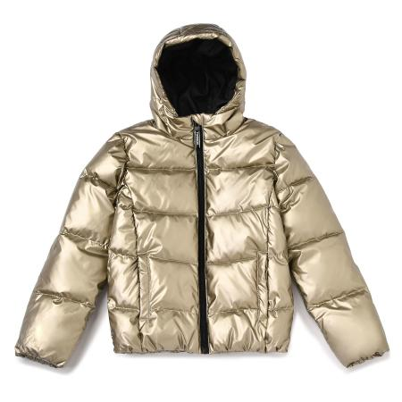

Куртка Futurino золотая

Стоимость: 1399 руб.
Описание товара
Детям от 7 лет до 12 лет
Яркий и стильный дизайн в новой золотистой куртке Futurino.
Характеристики товара
- Код товара: 2036146001sup
- Артикул: FWL012-N3
- Бренд: Futurino
- Страна-производитель: Китай
- Материал: 100% полиэстер
- Габариты упаковки: 30 x 5 х 30 см
- Вес упаковки: 0.39 кг.
Подробное описание товара
- Прочный стеганный полиэстер не боится ветра и влажных осадков
- Из такого же материала – гладкая подкладка
- Модель утеплена слоем синтепона: 170 г
- По бокам – два кармана
- Изделие застегивается на молнию
- Высокая износостойкость
- Объемный капюшон
- Температурный режим: до – 15 градусов
Данный температурный режим является рекомендованным, поскольку уровень температурного комфорта зависит от нескольких факторов:
- климатической зоны
- уровня активности ребёнка
- индивидуальных особенностей организма
- промежуточного слоя
Обращаем Ваше внимание, что правильное определение размера детской одежды напрямую зависит от индивидуальных особенностей ребёнка.
© Все права защищены